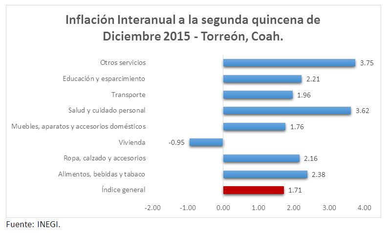
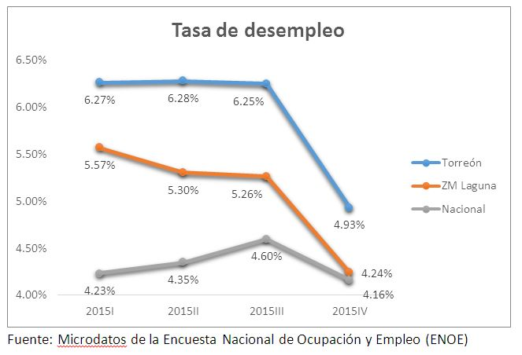
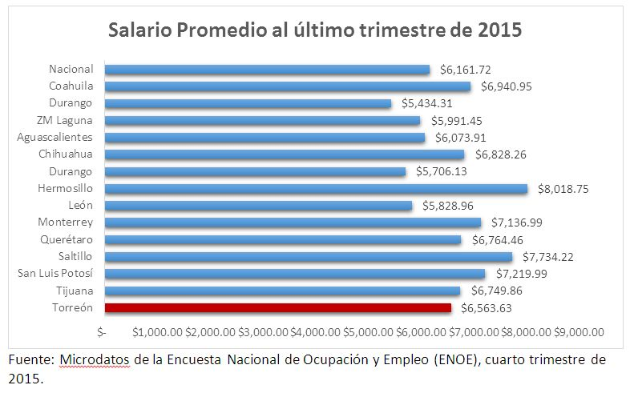

En un análisis del balance económico de Torreón en 2015, se observa que fue un año de baja inflación y vasta apertura de empresas. Durante el 2015 se registraron un total de 2,323 nuevos establecimientos, de acuerdo con datos de la Dirección de Desarrollo Económico, superando los 2,231 registros del 2014.
Además la inflación en Torreón fue de 1.7% anual, la menor desde que se tiene registro para el municipio e inferior a la inflación nacional de 2.13%. Adicionalmente la tasa de desempleo del municipio en el último trimestre del año fue de 4.9%, considerablemente menor al 7.1% del mismo periodo de 2014.

Todo esto se presenta en medio de un entorno global afectado entre otros factores por la volatilidad, la desaceleración de la economía China y el comienzo de la regularización de la política monetaria de Estados Unidos.
En el 2015 México creció 2.5% (alrededor de 1 y 1.5 puntos porcentuales menos de lo pronosticado al comienzo del año). El precio de la mezcla mexicana cayó 18 dólares, cerrando en $27.37 dólares por barril y el peso mexicano se depreció 17%. En este contexto, los indicadores económicos de Torreón, aun cuando no son negativos, tuvieron un desempeño moderado durante 2015.
A continuación se presentan algunos de los puntos más relevantes
La tasa de informalidad fue en promedio de 42%, quince puntos porcentuales por debajo de la tasa nacional de 57%, pero superior a la informalidad estatal de 35% y al promedio de 40% que sostuvo en 2014.
Tras permanecer constante en 6.2% durante los primeros tres trimestres de 2015, la tasa de desempleo disminuyó hacia el cierre del año, terminando con un promedio de 5.8%, cifra superior al 5.6% promediado en 2014 y al promedio nacional de 4.34%.

Por otra parte, el salario promedio se mantuvo sin cambios relevantes. Durante el 2015, el aumento del salario promedio en términos reales fue de 2.1% en el municipio de Torreón, es decir, no hubo una disminución en el poder de compra.
En cuanto al total de la zona metropolitana de La Laguna, la tasa de desempleo cerró con un promedio de 5.5% anual y un salario promedio de 5,810 pesos, ambos mejores resultados a los de 2014.
A pesar de haber sido un año de baja inflación y vasta apertura de empresas, la tasa de desempleo sigue siendo superior a la media nacional y a la de otros municipios de la república como Chihuahua y Saltillo. Además, el salario promedio aumentó alrededor de 130 pesos en un año y sigue siendo inferior al promedio estatal.

Un mayor aumento en los salarios es necesario, pues en teoría nuestros salarios crecieron más que el índice general de inflación, pero en la práctica la inflación de cada consumidor depende de los bienes y servicios que adquiere. Es decir que si un consumidor de Torreón gastó la mayor parte de su salario en los bienes con las tasas más altas de inflación, en este caso los productos de salud y cuidado personal, los alimentos, la educación y la ropa, el crecimiento real de su salario se redujo a alrededor de 1% en un año.
Para 2016, el reto es mayor, pues hasta la primera quincena de marzo, la inflación acumulada es de 1% y la interanual de 2.65%. Analizando la inflación por objeto del gasto, las cifras son mayores a las de 2015: los alimentos bebidas y tabaco registraron una inflación quincenal interanual de 3.70. La ropa, calzado y accesorios presentaron un 1.82, mientras que la salud y el cuidado personal registraron una inflación de 6.01.
En pocas palabras, necesitamos un aumento nominal del salario de aproximadamente 5% para mantener el poder de compra del 2015. La tarea implica un esfuerzo de mediano y largo plazo lograr una mayor oferta de trabajos especializados y mano de obra capacitada que se traduzcan en primero, mejores remuneraciones y después mejor calidad de vida.